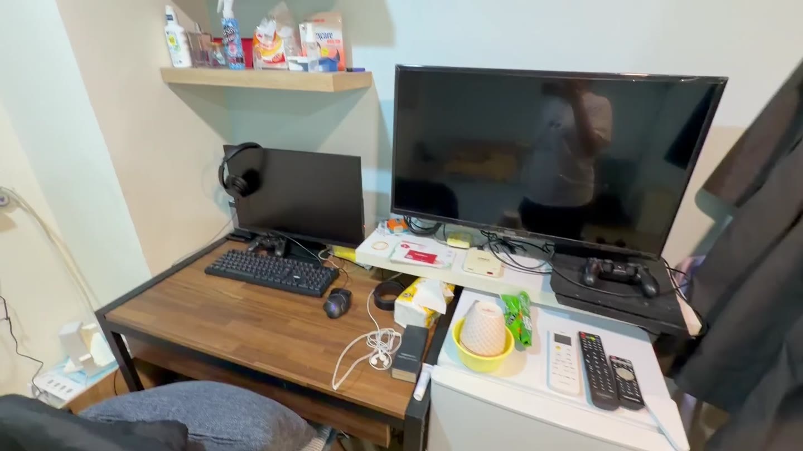
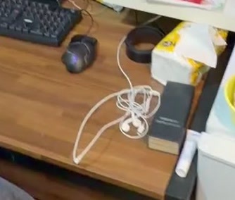
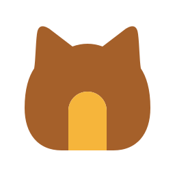

世安
04DEMO 流程
一段居家影片，看見入住前的風險
飼主不一定看得出風險，AI 幫忙找出需要先處理的地方。
真實報告案例 · 63.05 秒
左側牆面垂落線材
PDF 原始案例 3




改善圖僅為 AI 模擬；橘框是估計範圍、綠框是對位區域，均非實際完工證據。
使用者得到什麼？
從不知道風險，
到知道先改善哪裡。
到知道先改善哪裡。
不用先懂居家風險分類，也能從自己的房間影片開始準備。
1
上傳一段居家影片
2
看到風險框線與原因
3
照建議收整，再現場確認
不只提醒「有危險」，也提供可執行的改善方向。
AI 如何幫忙從影片挑出代表畫面 → 辨識可見風險 → 附原圖證據 → 生成改善示意與建議

01 / 02世安
04DEMO 流程
讓 AI 分析可信、穩定、有效率
真正的工程挑戰：不是只讓模型回答，而是讓結果有依據、能交付、可控管。
01｜可信的 AI 分析
知道這個風險
從哪張照片來
從哪張照片來
AI 描述可能出錯，所以必須保留證據與待確認事項。
FFmpeg 選最多 8 張影格
Azure VLM ＋ Schema／Zod
影格時間 ＋ SHA-256 配對
Azure VLM ＋ Schema／Zod
影格時間 ＋ SHA-256 配對
價值：風險可回看、可追溯
02｜可靠的背景流程
AI 跑幾分鐘，
網站也不必卡住
網站也不必卡住
長時間影片分析交給背景工作，不佔住使用者的網頁請求。
Next.js 建立工作
PostgreSQL Scoped Queue
Docker Worker＋Lease／Attempt
PostgreSQL Scoped Queue
Docker Worker＋Lease／Attempt
價值：工作有狀態、有授權
03｜效率與交付控管
等待模型時，
不必只能排隊
不必只能排隊
改善圖採雙路並行，同時遵守共用模型部署的速率限制。
Image Edit 雙路並行
至少 12 秒起送間隔
私有報告與讀取授權檢查
至少 12 秒起送間隔
私有報告與讀取授權檢查
價值：兼顧速度與資料隱私
固定六件改圖｜受控實測
185.2 秒 → 101.2 秒
只計 Image Edit 階段，不是全流程加速。
正式網站單筆 E2E 驗收
約 2.4 秒領件 · Worker 約 4 分 22 秒
本機 Docker 串接正式站與雲端服務。
02 / 02